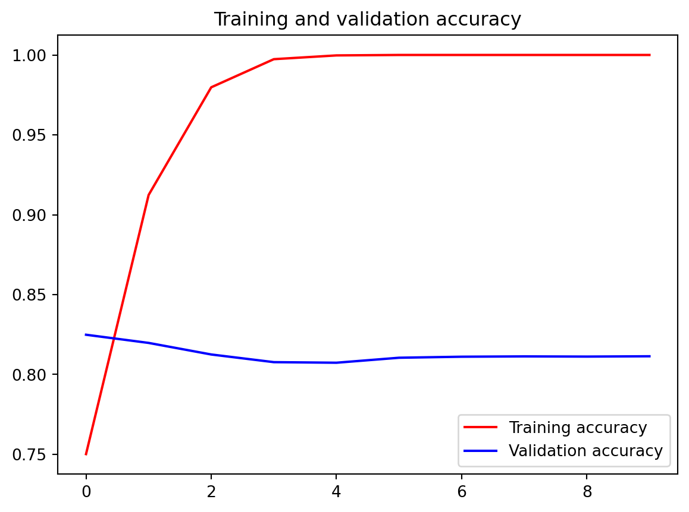
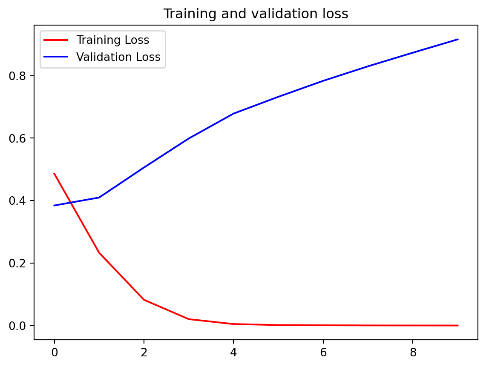
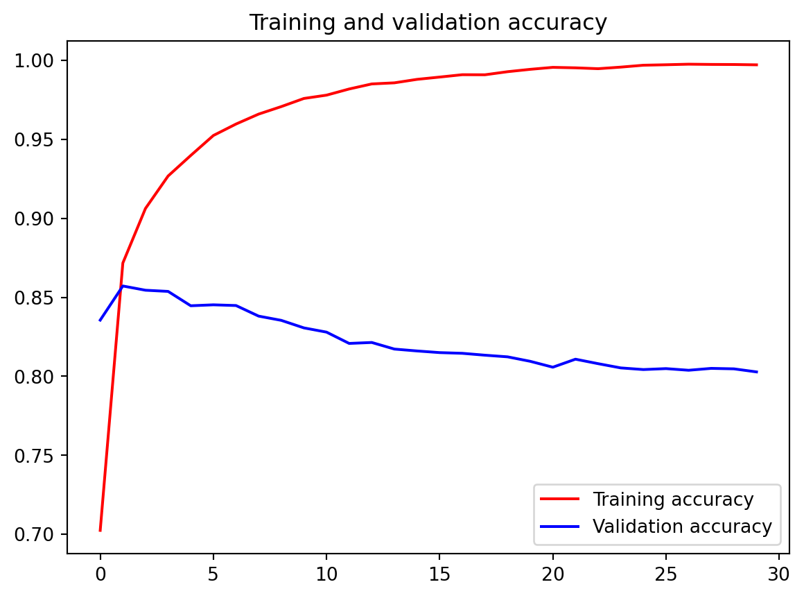
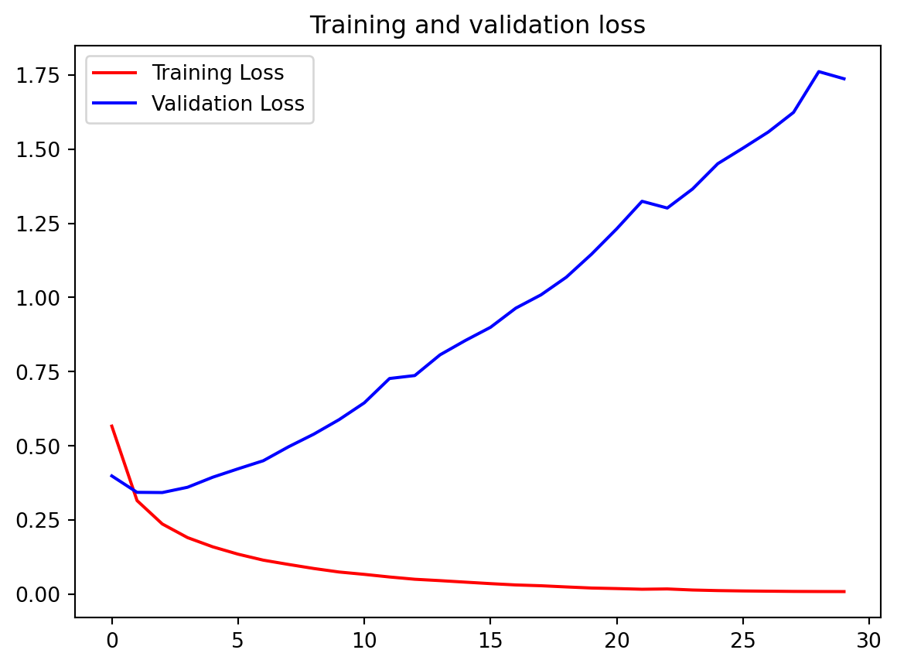

Code
import os
os.environ["TF_USE_LEGACY_KERAS"] = "1"
import tensorflow as tf
print(tf.__version__)2.16.12.16.1tfds.core.DatasetInfo(
name='imdb_reviews',
full_name='imdb_reviews/plain_text/1.0.0',
description="""
Large Movie Review Dataset. This is a dataset for binary sentiment
classification containing substantially more data than previous benchmark
datasets. We provide a set of 25,000 highly polar movie reviews for training,
and 25,000 for testing. There is additional unlabeled data for use as well.
""",
config_description="""
Plain text
""",
homepage='http://ai.stanford.edu/~amaas/data/sentiment/',
data_dir='/Users/jinchaoduan/tensorflow_datasets/imdb_reviews/plain_text/1.0.0',
file_format=tfrecord,
download_size=80.23 MiB,
dataset_size=129.83 MiB,
features=FeaturesDict({
'label': ClassLabel(shape=(), dtype=int64, num_classes=2),
'text': Text(shape=(), dtype=string),
}),
supervised_keys=('text', 'label'),
disable_shuffling=False,
splits={
'test': <SplitInfo num_examples=25000, num_shards=1>,
'train': <SplitInfo num_examples=25000, num_shards=1>,
'unsupervised': <SplitInfo num_examples=50000, num_shards=1>,
},
citation="""@InProceedings{maas-EtAl:2011:ACL-HLT2011,
author = {Maas, Andrew L. and Daly, Raymond E. and Pham, Peter T. and Huang, Dan and Ng, Andrew Y. and Potts, Christopher},
title = {Learning Word Vectors for Sentiment Analysis},
booktitle = {Proceedings of the 49th Annual Meeting of the Association for Computational Linguistics: Human Language Technologies},
month = {June},
year = {2011},
address = {Portland, Oregon, USA},
publisher = {Association for Computational Linguistics},
pages = {142--150},
url = {http://www.aclweb.org/anthology/P11-1015}
}""",
){'train': <_PrefetchDataset element_spec=(TensorSpec(shape=(), dtype=tf.string, name=None), TensorSpec(shape=(), dtype=tf.int64, name=None))>, 'test': <_PrefetchDataset element_spec=(TensorSpec(shape=(), dtype=tf.string, name=None), TensorSpec(shape=(), dtype=tf.int64, name=None))>, 'unsupervised': <_PrefetchDataset element_spec=(TensorSpec(shape=(), dtype=tf.string, name=None), TensorSpec(shape=(), dtype=tf.int64, name=None))>}(<tf.Tensor: shape=(), dtype=string, numpy=b"This was an absolutely terrible movie. Don't be lured in by Christopher Walken or Michael Ironside. Both are great actors, but this must simply be their worst role in history. Even their great acting could not redeem this movie's ridiculous storyline. This movie is an early nineties US propaganda piece. The most pathetic scenes were those when the Columbian rebels were making their cases for revolutions. Maria Conchita Alonso appeared phony, and her pseudo-love affair with Walken was nothing but a pathetic emotional plug in a movie that was devoid of any real meaning. I am disappointed that there are movies like this, ruining actor's like Christopher Walken's good name. I could barely sit through it.">, <tf.Tensor: shape=(), dtype=int64, numpy=0>)
(<tf.Tensor: shape=(), dtype=string, numpy=b'I have been known to fall asleep during films, but this is usually due to a combination of things including, really tired, being warm and comfortable on the sette and having just eaten a lot. However on this occasion I fell asleep because the film was rubbish. The plot development was constant. Constantly slow and boring. Things seemed to happen, but with no explanation of what was causing them or why. I admit, I may have missed part of the film, but i watched the majority of it and everything just seemed to happen of its own accord without any real concern for anything else. I cant recommend this film at all.'>, <tf.Tensor: shape=(), dtype=int64, numpy=0>)import numpy as np
# Get the train and test sets
train_data, test_data = imdb['train'], imdb['test']
# Initialize sentences and labels lists
training_sentences = []
training_labels = []
testing_sentences = []
testing_labels = []
# Loop over all training examples and save the sentences and labels
for s,l in train_data:
training_sentences.append(s.numpy().decode('utf8'))
training_labels.append(l.numpy())
# Loop over all test examples and save the sentences and labels
for s,l in test_data:
testing_sentences.append(s.numpy().decode('utf8'))
testing_labels.append(l.numpy())
# Convert labels lists to numpy array
training_labels_final = np.array(training_labels)
testing_labels_final = np.array(testing_labels)using 10000 max common words and each line max 120 words.
from tensorflow.keras.preprocessing.text import Tokenizer
from tensorflow.keras.preprocessing.sequence import pad_sequences
# Initialize the Tokenizer class
tokenizer = Tokenizer(num_words = vocab_size, oov_token=oov_tok)
# Generate the word index dictionary for the training sentences
tokenizer.fit_on_texts(training_sentences)
word_index = tokenizer.word_index
# Generate and pad the training sequences
sequences = tokenizer.texts_to_sequences(training_sentences)
padded = pad_sequences(sequences,maxlen=max_length, truncating=trunc_type)
# the testing set is tokenizerd base on the training set
# Generate and pad the test sequences
testing_sequences = tokenizer.texts_to_sequences(testing_sentences)
testing_padded = pad_sequences(testing_sequences,maxlen=max_length, truncating=trunc_type)first line
? ? ? ? ? ? ? ? i have been known to fall asleep during films but this is usually due to a combination of things including really tired being warm and comfortable on the <OOV> and having just eaten a lot however on this occasion i fell asleep because the film was rubbish the plot development was constant constantly slow and boring things seemed to happen but with no explanation of what was causing them or why i admit i may have missed part of the film but i watched the majority of it and everything just seemed to happen of its own <OOV> without any real concern for anything else i cant recommend this film at allfirst line after tokenizer
[11, 26, 75, 571, 6, 805, 2354, 313, 106, 19, 12, 7, 629, 686, 6, 4, 2219, 5, 181, 584, 64, 1454, 110, 2263, 3, 3951, 21, 2, 1, 3, 258, 41, 4677, 4, 174, 188, 21, 12, 4078, 11, 1578, 2354, 86, 2, 20, 14, 1907, 2, 112, 940, 14, 1811, 1340, 548, 3, 355, 181, 466, 6, 591, 19, 17, 55, 1817, 5, 49, 14, 4044, 96, 40, 136, 11, 972, 11, 201, 26, 1046, 171, 5, 2, 20, 19, 11, 294, 2, 2155, 5, 10, 3, 283, 41, 466, 6, 591, 5, 92, 203, 1, 207, 99, 145, 4382, 16, 230, 332, 11, 2486, 384, 12, 20, 31, 30]# Build the model
model = tf.keras.Sequential([
tf.keras.layers.Embedding(vocab_size, embedding_dim,
#input_length=max_length input_length is remove in Keras 3 so change to keras 2 in the beginning of this notebook
input_length=max_length
),
tf.keras.layers.Flatten(),
tf.keras.layers.Dense(6, activation='relu'),
tf.keras.layers.Dense(1, activation='sigmoid')
])Model: "sequential"
_________________________________________________________________
Layer (type) Output Shape Param #
=================================================================
embedding (Embedding) (None, 120, 16) 160000
flatten (Flatten) (None, 1920) 0
dense (Dense) (None, 6) 11526
dense_1 (Dense) (None, 1) 7
=================================================================
Total params: 171533 (670.05 KB)
Trainable params: 171533 (670.05 KB)
Non-trainable params: 0 (0.00 Byte)
_________________________________________________________________Epoch 1/10
1/782 [..............................] - ETA: 1:12:52 - loss: 0.6918 - accuracy: 0.5625 66/782 [=>............................] - ETA: 0s - loss: 0.6921 - accuracy: 0.5152 134/782 [====>.........................] - ETA: 0s - loss: 0.6907 - accuracy: 0.5296196/782 [======>.......................] - ETA: 0s - loss: 0.6824 - accuracy: 0.5627256/782 [========>.....................] - ETA: 0s - loss: 0.6630 - accuracy: 0.5973317/782 [===========>..................] - ETA: 0s - loss: 0.6308 - accuracy: 0.6345379/782 [=============>................] - ETA: 0s - loss: 0.6009 - accuracy: 0.6619439/782 [===============>..............] - ETA: 0s - loss: 0.5734 - accuracy: 0.6846500/782 [==================>...........] - ETA: 0s - loss: 0.5505 - accuracy: 0.7031561/782 [====================>.........] - ETA: 0s - loss: 0.5329 - accuracy: 0.7166622/782 [======================>.......] - ETA: 0s - loss: 0.5181 - accuracy: 0.7277684/782 [=========================>....] - ETA: 0s - loss: 0.5060 - accuracy: 0.7368745/782 [===========================>..] - ETA: 0s - loss: 0.4923 - accuracy: 0.7455782/782 [==============================] - 7s 1ms/step - loss: 0.4858 - accuracy: 0.7502 - val_loss: 0.3843 - val_accuracy: 0.8249
Epoch 2/10
1/782 [..............................] - ETA: 1s - loss: 0.3600 - accuracy: 0.8125 62/782 [=>............................] - ETA: 0s - loss: 0.2434 - accuracy: 0.9093123/782 [===>..........................] - ETA: 0s - loss: 0.2410 - accuracy: 0.9126184/782 [======>.......................] - ETA: 0s - loss: 0.2416 - accuracy: 0.9120245/782 [========>.....................] - ETA: 0s - loss: 0.2380 - accuracy: 0.9136307/782 [==========>...................] - ETA: 0s - loss: 0.2380 - accuracy: 0.9121370/782 [=============>................] - ETA: 0s - loss: 0.2376 - accuracy: 0.9115431/782 [===============>..............] - ETA: 0s - loss: 0.2353 - accuracy: 0.9118492/782 [=================>............] - ETA: 0s - loss: 0.2342 - accuracy: 0.9129554/782 [====================>.........] - ETA: 0s - loss: 0.2325 - accuracy: 0.9136615/782 [======================>.......] - ETA: 0s - loss: 0.2345 - accuracy: 0.9126677/782 [========================>.....] - ETA: 0s - loss: 0.2341 - accuracy: 0.9120740/782 [===========================>..] - ETA: 0s - loss: 0.2342 - accuracy: 0.9122782/782 [==============================] - 1s 1ms/step - loss: 0.2330 - accuracy: 0.9124 - val_loss: 0.4098 - val_accuracy: 0.8198
Epoch 3/10
1/782 [..............................] - ETA: 1s - loss: 0.0625 - accuracy: 1.0000 63/782 [=>............................] - ETA: 0s - loss: 0.0953 - accuracy: 0.9807124/782 [===>..........................] - ETA: 0s - loss: 0.0924 - accuracy: 0.9806184/782 [======>.......................] - ETA: 0s - loss: 0.0907 - accuracy: 0.9798245/782 [========>.....................] - ETA: 0s - loss: 0.0877 - accuracy: 0.9806304/782 [==========>...................] - ETA: 0s - loss: 0.0846 - accuracy: 0.9822364/782 [============>.................] - ETA: 0s - loss: 0.0831 - accuracy: 0.9825425/782 [===============>..............] - ETA: 0s - loss: 0.0819 - accuracy: 0.9824485/782 [=================>............] - ETA: 0s - loss: 0.0814 - accuracy: 0.9822548/782 [====================>.........] - ETA: 0s - loss: 0.0809 - accuracy: 0.9819611/782 [======================>.......] - ETA: 0s - loss: 0.0813 - accuracy: 0.9812670/782 [========================>.....] - ETA: 0s - loss: 0.0813 - accuracy: 0.9806731/782 [===========================>..] - ETA: 0s - loss: 0.0817 - accuracy: 0.9802782/782 [==============================] - 1s 1ms/step - loss: 0.0824 - accuracy: 0.9798 - val_loss: 0.5059 - val_accuracy: 0.8125
Epoch 4/10
1/782 [..............................] - ETA: 1s - loss: 0.0181 - accuracy: 1.0000 61/782 [=>............................] - ETA: 0s - loss: 0.0185 - accuracy: 0.9995121/782 [===>..........................] - ETA: 0s - loss: 0.0222 - accuracy: 0.9979184/782 [======>.......................] - ETA: 0s - loss: 0.0227 - accuracy: 0.9980244/782 [========>.....................] - ETA: 0s - loss: 0.0217 - accuracy: 0.9981304/782 [==========>...................] - ETA: 0s - loss: 0.0208 - accuracy: 0.9981366/782 [=============>................] - ETA: 0s - loss: 0.0209 - accuracy: 0.9979427/782 [===============>..............] - ETA: 0s - loss: 0.0204 - accuracy: 0.9979488/782 [=================>............] - ETA: 0s - loss: 0.0197 - accuracy: 0.9979549/782 [====================>.........] - ETA: 0s - loss: 0.0203 - accuracy: 0.9977610/782 [======================>.......] - ETA: 0s - loss: 0.0204 - accuracy: 0.9975671/782 [========================>.....] - ETA: 0s - loss: 0.0209 - accuracy: 0.9974732/782 [===========================>..] - ETA: 0s - loss: 0.0208 - accuracy: 0.9973782/782 [==============================] - 1s 1ms/step - loss: 0.0205 - accuracy: 0.9974 - val_loss: 0.5988 - val_accuracy: 0.8077
Epoch 5/10
1/782 [..............................] - ETA: 0s - loss: 0.0051 - accuracy: 1.0000 62/782 [=>............................] - ETA: 0s - loss: 0.0057 - accuracy: 0.9995123/782 [===>..........................] - ETA: 0s - loss: 0.0051 - accuracy: 0.9997183/782 [======>.......................] - ETA: 0s - loss: 0.0049 - accuracy: 0.9998243/782 [========>.....................] - ETA: 0s - loss: 0.0049 - accuracy: 0.9999304/782 [==========>...................] - ETA: 0s - loss: 0.0051 - accuracy: 0.9998364/782 [============>.................] - ETA: 0s - loss: 0.0054 - accuracy: 0.9997425/782 [===============>..............] - ETA: 0s - loss: 0.0052 - accuracy: 0.9997484/782 [=================>............] - ETA: 0s - loss: 0.0052 - accuracy: 0.9997545/782 [===================>..........] - ETA: 0s - loss: 0.0051 - accuracy: 0.9997604/782 [======================>.......] - ETA: 0s - loss: 0.0051 - accuracy: 0.9997664/782 [========================>.....] - ETA: 0s - loss: 0.0050 - accuracy: 0.9997726/782 [==========================>...] - ETA: 0s - loss: 0.0048 - accuracy: 0.9997782/782 [==============================] - 1s 1ms/step - loss: 0.0048 - accuracy: 0.9997 - val_loss: 0.6785 - val_accuracy: 0.8074
Epoch 6/10
1/782 [..............................] - ETA: 1s - loss: 0.0021 - accuracy: 1.0000 61/782 [=>............................] - ETA: 0s - loss: 0.0021 - accuracy: 1.0000122/782 [===>..........................] - ETA: 0s - loss: 0.0020 - accuracy: 1.0000183/782 [======>.......................] - ETA: 0s - loss: 0.0019 - accuracy: 1.0000243/782 [========>.....................] - ETA: 0s - loss: 0.0018 - accuracy: 1.0000303/782 [==========>...................] - ETA: 0s - loss: 0.0018 - accuracy: 1.0000362/782 [============>.................] - ETA: 0s - loss: 0.0018 - accuracy: 1.0000423/782 [===============>..............] - ETA: 0s - loss: 0.0017 - accuracy: 1.0000484/782 [=================>............] - ETA: 0s - loss: 0.0017 - accuracy: 1.0000545/782 [===================>..........] - ETA: 0s - loss: 0.0017 - accuracy: 1.0000605/782 [======================>.......] - ETA: 0s - loss: 0.0017 - accuracy: 1.0000666/782 [========================>.....] - ETA: 0s - loss: 0.0016 - accuracy: 1.0000728/782 [==========================>...] - ETA: 0s - loss: 0.0016 - accuracy: 1.0000782/782 [==============================] - 1s 1ms/step - loss: 0.0016 - accuracy: 1.0000 - val_loss: 0.7323 - val_accuracy: 0.8105
Epoch 7/10
1/782 [..............................] - ETA: 0s - loss: 8.1185e-04 - accuracy: 1.0000 62/782 [=>............................] - ETA: 0s - loss: 9.2363e-04 - accuracy: 1.0000123/782 [===>..........................] - ETA: 0s - loss: 8.8470e-04 - accuracy: 1.0000184/782 [======>.......................] - ETA: 0s - loss: 8.7146e-04 - accuracy: 1.0000245/782 [========>.....................] - ETA: 0s - loss: 9.2569e-04 - accuracy: 1.0000306/782 [==========>...................] - ETA: 0s - loss: 8.9347e-04 - accuracy: 1.0000366/782 [=============>................] - ETA: 0s - loss: 8.8222e-04 - accuracy: 1.0000427/782 [===============>..............] - ETA: 0s - loss: 8.6732e-04 - accuracy: 1.0000489/782 [=================>............] - ETA: 0s - loss: 8.4530e-04 - accuracy: 1.0000551/782 [====================>.........] - ETA: 0s - loss: 8.3055e-04 - accuracy: 1.0000612/782 [======================>.......] - ETA: 0s - loss: 8.3302e-04 - accuracy: 1.0000674/782 [========================>.....] - ETA: 0s - loss: 8.2580e-04 - accuracy: 1.0000734/782 [===========================>..] - ETA: 0s - loss: 8.4495e-04 - accuracy: 1.0000782/782 [==============================] - 1s 1ms/step - loss: 8.4641e-04 - accuracy: 1.0000 - val_loss: 0.7833 - val_accuracy: 0.8111
Epoch 8/10
1/782 [..............................] - ETA: 1s - loss: 6.7429e-04 - accuracy: 1.0000 61/782 [=>............................] - ETA: 0s - loss: 4.8800e-04 - accuracy: 1.0000122/782 [===>..........................] - ETA: 0s - loss: 4.8625e-04 - accuracy: 1.0000182/782 [=====>........................] - ETA: 0s - loss: 4.8437e-04 - accuracy: 1.0000242/782 [========>.....................] - ETA: 0s - loss: 4.7416e-04 - accuracy: 1.0000303/782 [==========>...................] - ETA: 0s - loss: 4.6543e-04 - accuracy: 1.0000363/782 [============>.................] - ETA: 0s - loss: 4.5881e-04 - accuracy: 1.0000424/782 [===============>..............] - ETA: 0s - loss: 4.7487e-04 - accuracy: 1.0000485/782 [=================>............] - ETA: 0s - loss: 4.7160e-04 - accuracy: 1.0000545/782 [===================>..........] - ETA: 0s - loss: 4.6486e-04 - accuracy: 1.0000606/782 [======================>.......] - ETA: 0s - loss: 4.5689e-04 - accuracy: 1.0000666/782 [========================>.....] - ETA: 0s - loss: 4.5301e-04 - accuracy: 1.0000727/782 [==========================>...] - ETA: 0s - loss: 4.4361e-04 - accuracy: 1.0000782/782 [==============================] - 1s 1ms/step - loss: 4.3895e-04 - accuracy: 1.0000 - val_loss: 0.8298 - val_accuracy: 0.8113
Epoch 9/10
1/782 [..............................] - ETA: 1s - loss: 4.2306e-04 - accuracy: 1.0000 60/782 [=>............................] - ETA: 0s - loss: 2.7431e-04 - accuracy: 1.0000121/782 [===>..........................] - ETA: 0s - loss: 2.6689e-04 - accuracy: 1.0000181/782 [=====>........................] - ETA: 0s - loss: 2.6889e-04 - accuracy: 1.0000235/782 [========>.....................] - ETA: 0s - loss: 2.7214e-04 - accuracy: 1.0000269/782 [=========>....................] - ETA: 0s - loss: 2.7383e-04 - accuracy: 1.0000327/782 [===========>..................] - ETA: 0s - loss: 2.6937e-04 - accuracy: 1.0000385/782 [=============>................] - ETA: 0s - loss: 2.6957e-04 - accuracy: 1.0000445/782 [================>.............] - ETA: 0s - loss: 2.6841e-04 - accuracy: 1.0000505/782 [==================>...........] - ETA: 0s - loss: 2.6280e-04 - accuracy: 1.0000564/782 [====================>.........] - ETA: 0s - loss: 2.5987e-04 - accuracy: 1.0000624/782 [======================>.......] - ETA: 0s - loss: 2.5468e-04 - accuracy: 1.0000684/782 [=========================>....] - ETA: 0s - loss: 2.5359e-04 - accuracy: 1.0000745/782 [===========================>..] - ETA: 0s - loss: 2.5630e-04 - accuracy: 1.0000782/782 [==============================] - 1s 1ms/step - loss: 2.5552e-04 - accuracy: 1.0000 - val_loss: 0.8734 - val_accuracy: 0.8112
Epoch 10/10
1/782 [..............................] - ETA: 1s - loss: 1.2493e-04 - accuracy: 1.0000 60/782 [=>............................] - ETA: 0s - loss: 1.7526e-04 - accuracy: 1.0000120/782 [===>..........................] - ETA: 0s - loss: 1.7004e-04 - accuracy: 1.0000180/782 [=====>........................] - ETA: 0s - loss: 1.7191e-04 - accuracy: 1.0000239/782 [========>.....................] - ETA: 0s - loss: 1.6903e-04 - accuracy: 1.0000299/782 [==========>...................] - ETA: 0s - loss: 1.6420e-04 - accuracy: 1.0000359/782 [============>.................] - ETA: 0s - loss: 1.6057e-04 - accuracy: 1.0000420/782 [===============>..............] - ETA: 0s - loss: 1.5926e-04 - accuracy: 1.0000481/782 [=================>............] - ETA: 0s - loss: 1.5565e-04 - accuracy: 1.0000541/782 [===================>..........] - ETA: 0s - loss: 1.5483e-04 - accuracy: 1.0000600/782 [======================>.......] - ETA: 0s - loss: 1.5283e-04 - accuracy: 1.0000645/782 [=======================>......] - ETA: 0s - loss: 1.5181e-04 - accuracy: 1.0000693/782 [=========================>....] - ETA: 0s - loss: 1.5214e-04 - accuracy: 1.0000750/782 [===========================>..] - ETA: 0s - loss: 1.5323e-04 - accuracy: 1.0000782/782 [==============================] - 1s 1ms/step - loss: 1.5193e-04 - accuracy: 1.0000 - val_loss: 0.9159 - val_accuracy: 0.8114import matplotlib.image as mpimg
import matplotlib.pyplot as plt
#------------------------------------------------
# Plot training and validation accuracy per epoch
#------------------------------------------------
plt.plot(epochs, acc, 'r', label='Training accuracy')
plt.plot(epochs, val_acc, 'b', label='Validation accuracy')
plt.title('Training and validation accuracy')
plt.legend()
plt.show()
plt.figure()
plt.plot(epochs, loss, 'r', label='Training Loss')
plt.plot(epochs, val_loss, 'b', label='Validation Loss')
plt.title('Training and validation loss')
plt.legend()
plt.show()

(10000, 16)import numpy as np
from tensorflow.keras.preprocessing.text import Tokenizer
from tensorflow.keras.preprocessing.sequence import pad_sequences
# Parameters for padding and OOV tokens
trunc_type='post'
padding_type='post'
oov_tok = "<OOV>"
# Initialize the Tokenizer class
tokenizer = Tokenizer(num_words=vocab_size, oov_token=oov_tok)
# Generate the word index dictionary
tokenizer.fit_on_texts(training_sentences)
word_index = tokenizer.word_index
# Generate and pad the training sequences
training_sequences = tokenizer.texts_to_sequences(training_sentences)
training_padded = pad_sequences(training_sequences, maxlen=max_length, padding=padding_type, truncating=trunc_type)
# Generate and pad the testing sequences
testing_sequences = tokenizer.texts_to_sequences(testing_sentences)
testing_padded = pad_sequences(testing_sequences, maxlen=max_length, padding=padding_type, truncating=trunc_type)
# Convert the labels lists into numpy arrays
training_labels = np.array(training_labels)
testing_labels = np.array(testing_labels)import tensorflow as tf
# Initialize a GlobalAveragePooling1D (GAP1D) layer
gap1d_layer = tf.keras.layers.GlobalAveragePooling1D()
# Define sample array
sample_array = np.array([[[10,2],[1,3],[1,1]]])
# Print shape and contents of sample array
print(f'shape of sample_array = {sample_array.shape}')
print(f'sample array: {sample_array}')
# Pass the sample array to the GAP1D layer
output = gap1d_layer(sample_array)
# Print shape and contents of the GAP1D output array
print(f'output shape of gap1d_layer: {output.shape}')
print(f'output array of gap1d_layer: {output.numpy()}')shape of sample_array = (1, 3, 2)
sample array: [[[10 2]
[ 1 3]
[ 1 1]]]
output shape of gap1d_layer: (1, 2)
output array of gap1d_layer: [[4 2]]Model: "sequential_1"
_________________________________________________________________
Layer (type) Output Shape Param #
=================================================================
embedding_1 (Embedding) (None, 32, 16) 160000
global_average_pooling1d_1 (None, 16) 0
(GlobalAveragePooling1D)
dense_2 (Dense) (None, 24) 408
dense_3 (Dense) (None, 1) 25
=================================================================
Total params: 160433 (626.69 KB)
Trainable params: 160433 (626.69 KB)
Non-trainable params: 0 (0.00 Byte)
_________________________________________________________________Epoch 1/30
1/625 [..............................] - ETA: 5:55 - loss: 0.6927 - accuracy: 0.5312 86/625 [===>..........................] - ETA: 0s - loss: 0.6875 - accuracy: 0.5531 170/625 [=======>......................] - ETA: 0s - loss: 0.6827 - accuracy: 0.5599256/625 [===========>..................] - ETA: 0s - loss: 0.6743 - accuracy: 0.5660340/625 [===============>..............] - ETA: 0s - loss: 0.6578 - accuracy: 0.6053425/625 [===================>..........] - ETA: 0s - loss: 0.6318 - accuracy: 0.6429512/625 [=======================>......] - ETA: 0s - loss: 0.6020 - accuracy: 0.6724596/625 [===========================>..] - ETA: 0s - loss: 0.5754 - accuracy: 0.6958625/625 [==============================] - 1s 893us/step - loss: 0.5667 - accuracy: 0.7024 - val_loss: 0.3989 - val_accuracy: 0.8356
Epoch 2/30
1/625 [..............................] - ETA: 0s - loss: 0.2930 - accuracy: 0.9062 85/625 [===>..........................] - ETA: 0s - loss: 0.3448 - accuracy: 0.8710170/625 [=======>......................] - ETA: 0s - loss: 0.3346 - accuracy: 0.8715253/625 [===========>..................] - ETA: 0s - loss: 0.3334 - accuracy: 0.8670338/625 [===============>..............] - ETA: 0s - loss: 0.3268 - accuracy: 0.8688423/625 [===================>..........] - ETA: 0s - loss: 0.3261 - accuracy: 0.8678509/625 [=======================>......] - ETA: 0s - loss: 0.3199 - accuracy: 0.8696593/625 [===========================>..] - ETA: 0s - loss: 0.3166 - accuracy: 0.8714625/625 [==============================] - 0s 690us/step - loss: 0.3158 - accuracy: 0.8717 - val_loss: 0.3436 - val_accuracy: 0.8572
Epoch 3/30
1/625 [..............................] - ETA: 0s - loss: 0.1824 - accuracy: 0.9375 85/625 [===>..........................] - ETA: 0s - loss: 0.2508 - accuracy: 0.9011168/625 [=======>......................] - ETA: 0s - loss: 0.2425 - accuracy: 0.9025254/625 [===========>..................] - ETA: 0s - loss: 0.2423 - accuracy: 0.9045338/625 [===============>..............] - ETA: 0s - loss: 0.2414 - accuracy: 0.9047423/625 [===================>..........] - ETA: 0s - loss: 0.2415 - accuracy: 0.9043509/625 [=======================>......] - ETA: 0s - loss: 0.2404 - accuracy: 0.9046594/625 [===========================>..] - ETA: 0s - loss: 0.2377 - accuracy: 0.9061625/625 [==============================] - 0s 689us/step - loss: 0.2371 - accuracy: 0.9063 - val_loss: 0.3429 - val_accuracy: 0.8545
Epoch 4/30
1/625 [..............................] - ETA: 0s - loss: 0.0826 - accuracy: 0.9688 85/625 [===>..........................] - ETA: 0s - loss: 0.1743 - accuracy: 0.9423168/625 [=======>......................] - ETA: 0s - loss: 0.1855 - accuracy: 0.9334253/625 [===========>..................] - ETA: 0s - loss: 0.1874 - accuracy: 0.9305338/625 [===============>..............] - ETA: 0s - loss: 0.1918 - accuracy: 0.9276423/625 [===================>..........] - ETA: 0s - loss: 0.1918 - accuracy: 0.9264505/625 [=======================>......] - ETA: 0s - loss: 0.1937 - accuracy: 0.9256589/625 [===========================>..] - ETA: 0s - loss: 0.1918 - accuracy: 0.9267625/625 [==============================] - 0s 693us/step - loss: 0.1911 - accuracy: 0.9269 - val_loss: 0.3608 - val_accuracy: 0.8538
Epoch 5/30
1/625 [..............................] - ETA: 0s - loss: 0.2358 - accuracy: 0.8750 85/625 [===>..........................] - ETA: 0s - loss: 0.1529 - accuracy: 0.9507170/625 [=======>......................] - ETA: 0s - loss: 0.1571 - accuracy: 0.9471254/625 [===========>..................] - ETA: 0s - loss: 0.1554 - accuracy: 0.9470339/625 [===============>..............] - ETA: 0s - loss: 0.1549 - accuracy: 0.9447423/625 [===================>..........] - ETA: 0s - loss: 0.1574 - accuracy: 0.9424509/625 [=======================>......] - ETA: 0s - loss: 0.1584 - accuracy: 0.9413550/625 [=========================>....] - ETA: 0s - loss: 0.1583 - accuracy: 0.9408625/625 [==============================] - 0s 734us/step - loss: 0.1600 - accuracy: 0.9398 - val_loss: 0.3947 - val_accuracy: 0.8447
Epoch 6/30
1/625 [..............................] - ETA: 0s - loss: 0.0996 - accuracy: 0.9688 84/625 [===>..........................] - ETA: 0s - loss: 0.1257 - accuracy: 0.9587168/625 [=======>......................] - ETA: 0s - loss: 0.1292 - accuracy: 0.9568253/625 [===========>..................] - ETA: 0s - loss: 0.1284 - accuracy: 0.9571336/625 [===============>..............] - ETA: 0s - loss: 0.1314 - accuracy: 0.9564420/625 [===================>..........] - ETA: 0s - loss: 0.1321 - accuracy: 0.9557505/625 [=======================>......] - ETA: 0s - loss: 0.1332 - accuracy: 0.9545589/625 [===========================>..] - ETA: 0s - loss: 0.1341 - accuracy: 0.9536625/625 [==============================] - 0s 693us/step - loss: 0.1354 - accuracy: 0.9525 - val_loss: 0.4229 - val_accuracy: 0.8453
Epoch 7/30
1/625 [..............................] - ETA: 0s - loss: 0.1418 - accuracy: 0.9375 85/625 [===>..........................] - ETA: 0s - loss: 0.1143 - accuracy: 0.9647169/625 [=======>......................] - ETA: 0s - loss: 0.1080 - accuracy: 0.9654254/625 [===========>..................] - ETA: 0s - loss: 0.1110 - accuracy: 0.9640339/625 [===============>..............] - ETA: 0s - loss: 0.1108 - accuracy: 0.9637425/625 [===================>..........] - ETA: 0s - loss: 0.1092 - accuracy: 0.9632508/625 [=======================>......] - ETA: 0s - loss: 0.1106 - accuracy: 0.9621593/625 [===========================>..] - ETA: 0s - loss: 0.1145 - accuracy: 0.9602625/625 [==============================] - 0s 689us/step - loss: 0.1152 - accuracy: 0.9597 - val_loss: 0.4501 - val_accuracy: 0.8448
Epoch 8/30
1/625 [..............................] - ETA: 0s - loss: 0.0986 - accuracy: 0.9375 86/625 [===>..........................] - ETA: 0s - loss: 0.0951 - accuracy: 0.9731170/625 [=======>......................] - ETA: 0s - loss: 0.0924 - accuracy: 0.9728253/625 [===========>..................] - ETA: 0s - loss: 0.0934 - accuracy: 0.9712340/625 [===============>..............] - ETA: 0s - loss: 0.0981 - accuracy: 0.9680425/625 [===================>..........] - ETA: 0s - loss: 0.0965 - accuracy: 0.9689512/625 [=======================>......] - ETA: 0s - loss: 0.0980 - accuracy: 0.9674596/625 [===========================>..] - ETA: 0s - loss: 0.1000 - accuracy: 0.9664625/625 [==============================] - 0s 686us/step - loss: 0.1007 - accuracy: 0.9661 - val_loss: 0.4971 - val_accuracy: 0.8381
Epoch 9/30
1/625 [..............................] - ETA: 0s - loss: 0.0473 - accuracy: 1.0000 86/625 [===>..........................] - ETA: 0s - loss: 0.0776 - accuracy: 0.9778169/625 [=======>......................] - ETA: 0s - loss: 0.0753 - accuracy: 0.9797256/625 [===========>..................] - ETA: 0s - loss: 0.0798 - accuracy: 0.9758341/625 [===============>..............] - ETA: 0s - loss: 0.0817 - accuracy: 0.9744425/625 [===================>..........] - ETA: 0s - loss: 0.0851 - accuracy: 0.9732510/625 [=======================>......] - ETA: 0s - loss: 0.0867 - accuracy: 0.9720595/625 [===========================>..] - ETA: 0s - loss: 0.0863 - accuracy: 0.9712625/625 [==============================] - 0s 684us/step - loss: 0.0871 - accuracy: 0.9708 - val_loss: 0.5397 - val_accuracy: 0.8354
Epoch 10/30
1/625 [..............................] - ETA: 0s - loss: 0.0813 - accuracy: 0.9688 87/625 [===>..........................] - ETA: 0s - loss: 0.0716 - accuracy: 0.9792173/625 [=======>......................] - ETA: 0s - loss: 0.0679 - accuracy: 0.9794259/625 [===========>..................] - ETA: 0s - loss: 0.0680 - accuracy: 0.9800343/625 [===============>..............] - ETA: 0s - loss: 0.0702 - accuracy: 0.9789429/625 [===================>..........] - ETA: 0s - loss: 0.0718 - accuracy: 0.9781514/625 [=======================>......] - ETA: 0s - loss: 0.0739 - accuracy: 0.9771600/625 [===========================>..] - ETA: 0s - loss: 0.0752 - accuracy: 0.9761625/625 [==============================] - 0s 683us/step - loss: 0.0753 - accuracy: 0.9760 - val_loss: 0.5884 - val_accuracy: 0.8307
Epoch 11/30
1/625 [..............................] - ETA: 0s - loss: 0.0665 - accuracy: 1.0000 85/625 [===>..........................] - ETA: 0s - loss: 0.0709 - accuracy: 0.9798169/625 [=======>......................] - ETA: 0s - loss: 0.0594 - accuracy: 0.9824254/625 [===========>..................] - ETA: 0s - loss: 0.0640 - accuracy: 0.9797340/625 [===============>..............] - ETA: 0s - loss: 0.0633 - accuracy: 0.9806422/625 [===================>..........] - ETA: 0s - loss: 0.0646 - accuracy: 0.9802506/625 [=======================>......] - ETA: 0s - loss: 0.0652 - accuracy: 0.9797592/625 [===========================>..] - ETA: 0s - loss: 0.0662 - accuracy: 0.9788625/625 [==============================] - 0s 691us/step - loss: 0.0673 - accuracy: 0.9780 - val_loss: 0.6451 - val_accuracy: 0.8280
Epoch 12/30
1/625 [..............................] - ETA: 0s - loss: 0.0168 - accuracy: 1.0000 85/625 [===>..........................] - ETA: 0s - loss: 0.0491 - accuracy: 0.9864170/625 [=======>......................] - ETA: 0s - loss: 0.0501 - accuracy: 0.9873254/625 [===========>..................] - ETA: 0s - loss: 0.0501 - accuracy: 0.9881339/625 [===============>..............] - ETA: 0s - loss: 0.0527 - accuracy: 0.9863424/625 [===================>..........] - ETA: 0s - loss: 0.0543 - accuracy: 0.9845509/625 [=======================>......] - ETA: 0s - loss: 0.0578 - accuracy: 0.9823594/625 [===========================>..] - ETA: 0s - loss: 0.0582 - accuracy: 0.9821625/625 [==============================] - 0s 689us/step - loss: 0.0585 - accuracy: 0.9819 - val_loss: 0.7271 - val_accuracy: 0.8208
Epoch 13/30
1/625 [..............................] - ETA: 0s - loss: 0.0055 - accuracy: 1.0000 85/625 [===>..........................] - ETA: 0s - loss: 0.0430 - accuracy: 0.9875170/625 [=======>......................] - ETA: 0s - loss: 0.0430 - accuracy: 0.9886256/625 [===========>..................] - ETA: 0s - loss: 0.0455 - accuracy: 0.9877340/625 [===============>..............] - ETA: 0s - loss: 0.0452 - accuracy: 0.9876424/625 [===================>..........] - ETA: 0s - loss: 0.0470 - accuracy: 0.9864510/625 [=======================>......] - ETA: 0s - loss: 0.0487 - accuracy: 0.9857594/625 [===========================>..] - ETA: 0s - loss: 0.0509 - accuracy: 0.9852625/625 [==============================] - 0s 687us/step - loss: 0.0508 - accuracy: 0.9851 - val_loss: 0.7371 - val_accuracy: 0.8214
Epoch 14/30
1/625 [..............................] - ETA: 0s - loss: 0.0173 - accuracy: 1.0000 84/625 [===>..........................] - ETA: 0s - loss: 0.0363 - accuracy: 0.9922168/625 [=======>......................] - ETA: 0s - loss: 0.0400 - accuracy: 0.9898255/625 [===========>..................] - ETA: 0s - loss: 0.0443 - accuracy: 0.9879340/625 [===============>..............] - ETA: 0s - loss: 0.0442 - accuracy: 0.9869424/625 [===================>..........] - ETA: 0s - loss: 0.0437 - accuracy: 0.9868509/625 [=======================>......] - ETA: 0s - loss: 0.0454 - accuracy: 0.9861594/625 [===========================>..] - ETA: 0s - loss: 0.0462 - accuracy: 0.9858625/625 [==============================] - 0s 689us/step - loss: 0.0462 - accuracy: 0.9858 - val_loss: 0.8068 - val_accuracy: 0.8173
Epoch 15/30
1/625 [..............................] - ETA: 0s - loss: 0.0482 - accuracy: 0.9688 85/625 [===>..........................] - ETA: 0s - loss: 0.0359 - accuracy: 0.9897170/625 [=======>......................] - ETA: 0s - loss: 0.0347 - accuracy: 0.9908254/625 [===========>..................] - ETA: 0s - loss: 0.0357 - accuracy: 0.9908339/625 [===============>..............] - ETA: 0s - loss: 0.0382 - accuracy: 0.9900427/625 [===================>..........] - ETA: 0s - loss: 0.0394 - accuracy: 0.9894512/625 [=======================>......] - ETA: 0s - loss: 0.0397 - accuracy: 0.9890597/625 [===========================>..] - ETA: 0s - loss: 0.0409 - accuracy: 0.9882625/625 [==============================] - 0s 683us/step - loss: 0.0411 - accuracy: 0.9880 - val_loss: 0.8550 - val_accuracy: 0.8161
Epoch 16/30
1/625 [..............................] - ETA: 0s - loss: 0.0099 - accuracy: 1.0000 87/625 [===>..........................] - ETA: 0s - loss: 0.0336 - accuracy: 0.9935171/625 [=======>......................] - ETA: 0s - loss: 0.0294 - accuracy: 0.9931258/625 [===========>..................] - ETA: 0s - loss: 0.0309 - accuracy: 0.9919344/625 [===============>..............] - ETA: 0s - loss: 0.0316 - accuracy: 0.9917429/625 [===================>..........] - ETA: 0s - loss: 0.0348 - accuracy: 0.9907514/625 [=======================>......] - ETA: 0s - loss: 0.0349 - accuracy: 0.9902601/625 [===========================>..] - ETA: 0s - loss: 0.0356 - accuracy: 0.9899625/625 [==============================] - 0s 680us/step - loss: 0.0361 - accuracy: 0.9895 - val_loss: 0.8997 - val_accuracy: 0.8150
Epoch 17/30
1/625 [..............................] - ETA: 0s - loss: 0.0039 - accuracy: 1.0000 85/625 [===>..........................] - ETA: 0s - loss: 0.0244 - accuracy: 0.9934169/625 [=======>......................] - ETA: 0s - loss: 0.0245 - accuracy: 0.9941254/625 [===========>..................] - ETA: 0s - loss: 0.0263 - accuracy: 0.9931340/625 [===============>..............] - ETA: 0s - loss: 0.0266 - accuracy: 0.9932425/625 [===================>..........] - ETA: 0s - loss: 0.0270 - accuracy: 0.9928510/625 [=======================>......] - ETA: 0s - loss: 0.0301 - accuracy: 0.9919594/625 [===========================>..] - ETA: 0s - loss: 0.0310 - accuracy: 0.9914625/625 [==============================] - 0s 686us/step - loss: 0.0317 - accuracy: 0.9910 - val_loss: 0.9641 - val_accuracy: 0.8146
Epoch 18/30
1/625 [..............................] - ETA: 0s - loss: 0.0069 - accuracy: 1.0000 85/625 [===>..........................] - ETA: 0s - loss: 0.0178 - accuracy: 0.9960169/625 [=======>......................] - ETA: 0s - loss: 0.0222 - accuracy: 0.9933254/625 [===========>..................] - ETA: 0s - loss: 0.0254 - accuracy: 0.9926337/625 [===============>..............] - ETA: 0s - loss: 0.0257 - accuracy: 0.9925422/625 [===================>..........] - ETA: 0s - loss: 0.0254 - accuracy: 0.9925507/625 [=======================>......] - ETA: 0s - loss: 0.0277 - accuracy: 0.9916591/625 [===========================>..] - ETA: 0s - loss: 0.0286 - accuracy: 0.9912625/625 [==============================] - 0s 692us/step - loss: 0.0290 - accuracy: 0.9909 - val_loss: 1.0090 - val_accuracy: 0.8134
Epoch 19/30
1/625 [..............................] - ETA: 0s - loss: 0.0065 - accuracy: 1.0000 84/625 [===>..........................] - ETA: 0s - loss: 0.0185 - accuracy: 0.9952170/625 [=======>......................] - ETA: 0s - loss: 0.0213 - accuracy: 0.9952254/625 [===========>..................] - ETA: 0s - loss: 0.0219 - accuracy: 0.9947339/625 [===============>..............] - ETA: 0s - loss: 0.0221 - accuracy: 0.9945424/625 [===================>..........] - ETA: 0s - loss: 0.0225 - accuracy: 0.9945509/625 [=======================>......] - ETA: 0s - loss: 0.0231 - accuracy: 0.9939594/625 [===========================>..] - ETA: 0s - loss: 0.0249 - accuracy: 0.9932625/625 [==============================] - 0s 687us/step - loss: 0.0250 - accuracy: 0.9929 - val_loss: 1.0683 - val_accuracy: 0.8123
Epoch 20/30
1/625 [..............................] - ETA: 0s - loss: 0.0117 - accuracy: 1.0000 86/625 [===>..........................] - ETA: 0s - loss: 0.0145 - accuracy: 0.9960170/625 [=======>......................] - ETA: 0s - loss: 0.0197 - accuracy: 0.9952255/625 [===========>..................] - ETA: 0s - loss: 0.0211 - accuracy: 0.9950342/625 [===============>..............] - ETA: 0s - loss: 0.0200 - accuracy: 0.9951428/625 [===================>..........] - ETA: 0s - loss: 0.0217 - accuracy: 0.9947512/625 [=======================>......] - ETA: 0s - loss: 0.0207 - accuracy: 0.9948595/625 [===========================>..] - ETA: 0s - loss: 0.0210 - accuracy: 0.9946625/625 [==============================] - 0s 688us/step - loss: 0.0213 - accuracy: 0.9944 - val_loss: 1.1460 - val_accuracy: 0.8095
Epoch 21/30
1/625 [..............................] - ETA: 0s - loss: 0.0568 - accuracy: 0.9688 86/625 [===>..........................] - ETA: 0s - loss: 0.0119 - accuracy: 0.9985171/625 [=======>......................] - ETA: 0s - loss: 0.0138 - accuracy: 0.9971256/625 [===========>..................] - ETA: 0s - loss: 0.0129 - accuracy: 0.9977339/625 [===============>..............] - ETA: 0s - loss: 0.0167 - accuracy: 0.9965424/625 [===================>..........] - ETA: 0s - loss: 0.0169 - accuracy: 0.9964509/625 [=======================>......] - ETA: 0s - loss: 0.0181 - accuracy: 0.9964593/625 [===========================>..] - ETA: 0s - loss: 0.0190 - accuracy: 0.9958625/625 [==============================] - 0s 689us/step - loss: 0.0194 - accuracy: 0.9956 - val_loss: 1.2316 - val_accuracy: 0.8058
Epoch 22/30
1/625 [..............................] - ETA: 0s - loss: 0.0067 - accuracy: 1.0000 85/625 [===>..........................] - ETA: 0s - loss: 0.0144 - accuracy: 0.9967169/625 [=======>......................] - ETA: 0s - loss: 0.0137 - accuracy: 0.9972256/625 [===========>..................] - ETA: 0s - loss: 0.0142 - accuracy: 0.9972299/625 [=============>................] - ETA: 0s - loss: 0.0142 - accuracy: 0.9970380/625 [=================>............] - ETA: 0s - loss: 0.0156 - accuracy: 0.9965463/625 [=====================>........] - ETA: 0s - loss: 0.0160 - accuracy: 0.9962548/625 [=========================>....] - ETA: 0s - loss: 0.0163 - accuracy: 0.9957625/625 [==============================] - 0s 728us/step - loss: 0.0172 - accuracy: 0.9954 - val_loss: 1.3241 - val_accuracy: 0.8109
Epoch 23/30
1/625 [..............................] - ETA: 0s - loss: 0.0367 - accuracy: 0.9688 83/625 [==>...........................] - ETA: 0s - loss: 0.0122 - accuracy: 0.9962167/625 [=======>......................] - ETA: 0s - loss: 0.0148 - accuracy: 0.9957252/625 [===========>..................] - ETA: 0s - loss: 0.0146 - accuracy: 0.9958338/625 [===============>..............] - ETA: 0s - loss: 0.0149 - accuracy: 0.9961422/625 [===================>..........] - ETA: 0s - loss: 0.0152 - accuracy: 0.9959507/625 [=======================>......] - ETA: 0s - loss: 0.0160 - accuracy: 0.9957593/625 [===========================>..] - ETA: 0s - loss: 0.0178 - accuracy: 0.9950625/625 [==============================] - 0s 689us/step - loss: 0.0182 - accuracy: 0.9948 - val_loss: 1.3013 - val_accuracy: 0.8080
Epoch 24/30
1/625 [..............................] - ETA: 0s - loss: 0.0024 - accuracy: 1.0000 85/625 [===>..........................] - ETA: 0s - loss: 0.0179 - accuracy: 0.9941169/625 [=======>......................] - ETA: 0s - loss: 0.0152 - accuracy: 0.9963255/625 [===========>..................] - ETA: 0s - loss: 0.0139 - accuracy: 0.9961341/625 [===============>..............] - ETA: 0s - loss: 0.0147 - accuracy: 0.9959425/625 [===================>..........] - ETA: 0s - loss: 0.0150 - accuracy: 0.9957511/625 [=======================>......] - ETA: 0s - loss: 0.0145 - accuracy: 0.9960595/625 [===========================>..] - ETA: 0s - loss: 0.0149 - accuracy: 0.9957625/625 [==============================] - 0s 689us/step - loss: 0.0146 - accuracy: 0.9958 - val_loss: 1.3655 - val_accuracy: 0.8053
Epoch 25/30
1/625 [..............................] - ETA: 0s - loss: 0.0107 - accuracy: 1.0000 85/625 [===>..........................] - ETA: 0s - loss: 0.0057 - accuracy: 1.0000169/625 [=======>......................] - ETA: 0s - loss: 0.0079 - accuracy: 0.9987255/625 [===========>..................] - ETA: 0s - loss: 0.0086 - accuracy: 0.9980337/625 [===============>..............] - ETA: 0s - loss: 0.0101 - accuracy: 0.9977421/625 [===================>..........] - ETA: 0s - loss: 0.0101 - accuracy: 0.9976506/625 [=======================>......] - ETA: 0s - loss: 0.0111 - accuracy: 0.9974590/625 [===========================>..] - ETA: 0s - loss: 0.0126 - accuracy: 0.9971625/625 [==============================] - 0s 693us/step - loss: 0.0127 - accuracy: 0.9970 - val_loss: 1.4508 - val_accuracy: 0.8043
Epoch 26/30
1/625 [..............................] - ETA: 0s - loss: 0.0090 - accuracy: 1.0000 86/625 [===>..........................] - ETA: 0s - loss: 0.0130 - accuracy: 0.9964171/625 [=======>......................] - ETA: 0s - loss: 0.0102 - accuracy: 0.9971254/625 [===========>..................] - ETA: 0s - loss: 0.0106 - accuracy: 0.9972340/625 [===============>..............] - ETA: 0s - loss: 0.0095 - accuracy: 0.9976426/625 [===================>..........] - ETA: 0s - loss: 0.0112 - accuracy: 0.9972512/625 [=======================>......] - ETA: 0s - loss: 0.0107 - accuracy: 0.9974598/625 [===========================>..] - ETA: 0s - loss: 0.0112 - accuracy: 0.9973625/625 [==============================] - 0s 686us/step - loss: 0.0115 - accuracy: 0.9973 - val_loss: 1.5033 - val_accuracy: 0.8049
Epoch 27/30
1/625 [..............................] - ETA: 0s - loss: 0.0180 - accuracy: 1.0000 85/625 [===>..........................] - ETA: 0s - loss: 0.0108 - accuracy: 0.9978170/625 [=======>......................] - ETA: 0s - loss: 0.0112 - accuracy: 0.9976254/625 [===========>..................] - ETA: 0s - loss: 0.0103 - accuracy: 0.9978338/625 [===============>..............] - ETA: 0s - loss: 0.0105 - accuracy: 0.9979423/625 [===================>..........] - ETA: 0s - loss: 0.0105 - accuracy: 0.9978505/625 [=======================>......] - ETA: 0s - loss: 0.0104 - accuracy: 0.9978591/625 [===========================>..] - ETA: 0s - loss: 0.0105 - accuracy: 0.9977625/625 [==============================] - 0s 691us/step - loss: 0.0106 - accuracy: 0.9977 - val_loss: 1.5574 - val_accuracy: 0.8038
Epoch 28/30
1/625 [..............................] - ETA: 0s - loss: 0.0018 - accuracy: 1.0000 85/625 [===>..........................] - ETA: 0s - loss: 0.0076 - accuracy: 0.9982171/625 [=======>......................] - ETA: 0s - loss: 0.0087 - accuracy: 0.9974256/625 [===========>..................] - ETA: 0s - loss: 0.0084 - accuracy: 0.9976342/625 [===============>..............] - ETA: 0s - loss: 0.0084 - accuracy: 0.9978426/625 [===================>..........] - ETA: 0s - loss: 0.0094 - accuracy: 0.9976512/625 [=======================>......] - ETA: 0s - loss: 0.0101 - accuracy: 0.9974597/625 [===========================>..] - ETA: 0s - loss: 0.0099 - accuracy: 0.9975625/625 [==============================] - 0s 685us/step - loss: 0.0099 - accuracy: 0.9975 - val_loss: 1.6236 - val_accuracy: 0.8050
Epoch 29/30
1/625 [..............................] - ETA: 0s - loss: 0.0019 - accuracy: 1.0000 84/625 [===>..........................] - ETA: 0s - loss: 0.0078 - accuracy: 0.9981168/625 [=======>......................] - ETA: 0s - loss: 0.0062 - accuracy: 0.9987252/625 [===========>..................] - ETA: 0s - loss: 0.0061 - accuracy: 0.9985336/625 [===============>..............] - ETA: 0s - loss: 0.0069 - accuracy: 0.9982420/625 [===================>..........] - ETA: 0s - loss: 0.0073 - accuracy: 0.9981507/625 [=======================>......] - ETA: 0s - loss: 0.0078 - accuracy: 0.9979593/625 [===========================>..] - ETA: 0s - loss: 0.0088 - accuracy: 0.9977625/625 [==============================] - 0s 689us/step - loss: 0.0095 - accuracy: 0.9974 - val_loss: 1.7610 - val_accuracy: 0.8047
Epoch 30/30
1/625 [..............................] - ETA: 0s - loss: 0.0054 - accuracy: 1.0000 84/625 [===>..........................] - ETA: 0s - loss: 0.0068 - accuracy: 0.9993170/625 [=======>......................] - ETA: 0s - loss: 0.0075 - accuracy: 0.9989255/625 [===========>..................] - ETA: 0s - loss: 0.0074 - accuracy: 0.9985338/625 [===============>..............] - ETA: 0s - loss: 0.0081 - accuracy: 0.9981423/625 [===================>..........] - ETA: 0s - loss: 0.0087 - accuracy: 0.9978508/625 [=======================>......] - ETA: 0s - loss: 0.0083 - accuracy: 0.9978592/625 [===========================>..] - ETA: 0s - loss: 0.0090 - accuracy: 0.9975625/625 [==============================] - 0s 689us/step - loss: 0.0093 - accuracy: 0.9973 - val_loss: 1.7368 - val_accuracy: 0.8028import matplotlib.image as mpimg
import matplotlib.pyplot as plt
#------------------------------------------------
# Plot training and validation accuracy per epoch
#------------------------------------------------
plt.plot(epochs, acc, 'r', label='Training accuracy')
plt.plot(epochs, val_acc, 'b', label='Validation accuracy')
plt.title('Training and validation accuracy')
plt.legend()
plt.show()
plt.figure()
plt.plot(epochs, loss, 'r', label='Training Loss')
plt.plot(epochs, val_loss, 'b', label='Validation Loss')
plt.title('Training and validation loss')
plt.legend()
plt.show()

# Get the index-word dictionary
reverse_word_index = tokenizer.index_word
# Get the embedding layer from the model (i.e. first layer)
embedding_layer = model.layers[0]
# Get the weights of the embedding layer
embedding_weights = embedding_layer.get_weights()[0]
# Print the shape. Expected is (vocab_size, embedding_dim)
print(embedding_weights.shape) (10000, 16)https://www.coursera.org/learn/natural-language-processing-tensorflow
https://github.com/https-deeplearning-ai/tensorflow-1-public/tree/main/C3
---
title: "W2:Word Embeddings"
execute:
warning: false
error: false
format:
html:
toc: true
toc-location: right
code-fold: show
code-tools: true
number-sections: true
code-block-bg: true
code-block-border-left: "#31BAE9"
---
Week2 Word Embeddings
Last week you saw how to use the Tokenizer to prepare your text to be used by a neural network by converting words into numeric tokens, and sequencing sentences from these tokens. This week you'll learn about Embeddings, where these tokens are mapped as vectors in a high dimension space. With Embeddings and labelled examples, these vectors can then be tuned so that words with similar meaning will have a similar direction in the vector space. This will begin the process of training a neural network to understand sentiment in text -- and you'll begin by looking at movie reviews, training a neural network on texts that are labelled 'positive' or 'negative' and determining which words in a sentence drive those meanings
```{python}
import os
os.environ["TF_USE_LEGACY_KERAS"] = "1"
import tensorflow as tf
print(tf.__version__)
```
# Training a binary classifier with the IMDB Reviews Dataset
## download datasets:
```{python}
#| eval: false
pip install -q tensorflow-datasets
```
## load data
```{python}
import tensorflow_datasets as tfds
# Load the IMDB Reviews dataset
imdb, info = tfds.load("imdb_reviews", with_info=True, as_supervised=True)
```
```{python}
# Print information about the dataset
print(info)
```
```{python}
# Print the contents of the dataset you downloaded
print(imdb)
```
```{python}
# Take 2 training examples and print its contents
for example in imdb['train'].take(2):
print(example)
```
# make it into train and test data
```{python}
import numpy as np
# Get the train and test sets
train_data, test_data = imdb['train'], imdb['test']
# Initialize sentences and labels lists
training_sentences = []
training_labels = []
testing_sentences = []
testing_labels = []
# Loop over all training examples and save the sentences and labels
for s,l in train_data:
training_sentences.append(s.numpy().decode('utf8'))
training_labels.append(l.numpy())
# Loop over all test examples and save the sentences and labels
for s,l in test_data:
testing_sentences.append(s.numpy().decode('utf8'))
testing_labels.append(l.numpy())
# Convert labels lists to numpy array
training_labels_final = np.array(training_labels)
testing_labels_final = np.array(testing_labels)
```
```{python}
len(training_sentences)
```
```{python}
training_sentences[1]
```
```{python}
training_labels_final[1]
```
```{python}
len(testing_sentences)
```
```{python}
testing_sentences[1]
```
```{python}
testing_labels_final[1]
```
## Tokenizer
using 10000 max common words and each line max 120 words.
```{python}
# Parameters
vocab_size = 10000
max_length = 120
embedding_dim = 16
#trunc_type='pre'
trunc_type='post'
oov_tok = "<OOV>"
```
```{python}
from tensorflow.keras.preprocessing.text import Tokenizer
from tensorflow.keras.preprocessing.sequence import pad_sequences
# Initialize the Tokenizer class
tokenizer = Tokenizer(num_words = vocab_size, oov_token=oov_tok)
# Generate the word index dictionary for the training sentences
tokenizer.fit_on_texts(training_sentences)
word_index = tokenizer.word_index
# Generate and pad the training sequences
sequences = tokenizer.texts_to_sequences(training_sentences)
padded = pad_sequences(sequences,maxlen=max_length, truncating=trunc_type)
# the testing set is tokenizerd base on the training set
# Generate and pad the test sequences
testing_sequences = tokenizer.texts_to_sequences(testing_sentences)
testing_padded = pad_sequences(testing_sequences,maxlen=max_length, truncating=trunc_type)
```
```{python}
reverse_word_index = dict([(value, key) for (key, value) in word_index.items()])
def decode_review(text):
return ' '.join([reverse_word_index.get(i, '?') for i in text])
```
```{python}
len(padded[0])
```
first line
```{python}
print(decode_review(padded[1]))
```
first line after tokenizer
```{python}
print(sequences[1])
```
## define model
```{python}
# Build the model
model = tf.keras.Sequential([
tf.keras.layers.Embedding(vocab_size, embedding_dim,
#input_length=max_length input_length is remove in Keras 3 so change to keras 2 in the beginning of this notebook
input_length=max_length
),
tf.keras.layers.Flatten(),
tf.keras.layers.Dense(6, activation='relu'),
tf.keras.layers.Dense(1, activation='sigmoid')
])
```
## compile model
```{python}
# Setup the training parameters
model.compile(loss='binary_crossentropy',optimizer='adam',metrics=['accuracy'])
```
```{python}
# Print the model summary
model.summary()
```
## Callbacks
```{python}
class myCallback(tf.keras.callbacks.Callback):
def on_epoch_end(self, epoch, logs={}):
if(logs.get('val_accuracy')>0.88):
print("\nReached 88% val_accuracy so cancelling training!")
self.model.stop_training = True
# Instantiate class
callbacks = myCallback()
```
## train model
```{python}
num_epochs = 10
# Train the model
history=model.fit(
padded, training_labels_final, epochs=num_epochs,
validation_data=(testing_padded, testing_labels_final),
verbose=1,
callbacks=[callbacks]
)
```
```{python}
acc = history.history['accuracy']
val_acc = history.history['val_accuracy']
loss = history.history['loss']
val_loss = history.history['val_loss']
epochs = range(len(acc))
```
```{python}
import matplotlib.image as mpimg
import matplotlib.pyplot as plt
#------------------------------------------------
# Plot training and validation accuracy per epoch
#------------------------------------------------
plt.plot(epochs, acc, 'r', label='Training accuracy')
plt.plot(epochs, val_acc, 'b', label='Validation accuracy')
plt.title('Training and validation accuracy')
plt.legend()
plt.show()
plt.figure()
plt.plot(epochs, loss, 'r', label='Training Loss')
plt.plot(epochs, val_loss, 'b', label='Validation Loss')
plt.title('Training and validation loss')
plt.legend()
plt.show()
```
## Visualize Word Embeddings
```{python}
# Get the embedding layer from the model (i.e. first layer)
embedding_layer = model.layers[0]
# Get the weights of the embedding layer
embedding_weights = embedding_layer.get_weights()[0]
# Print the shape. Expected is (vocab_size, embedding_dim)
print(embedding_weights.shape)
```
```{python}
# Get the index-word dictionary
reverse_word_index = tokenizer.index_word
#reverse_word_index
```
# Training a binary classifier with the sarcasm Dataset
```{python}
#| eval: false
import urllib.request
urllib.request.urlretrieve("https://storage.googleapis.com/tensorflow-1-public/course3/sarcasm.json","sarcasm.json")
```
## read data
```{python}
import json
# Load the JSON file
with open("./sarcasm.json", 'r') as f:
datastore = json.load(f)
```
```{python}
# Initialize lists
sentences = []
labels = []
urls = []
# Append elements in the dictionaries into each list
for item in datastore:
sentences.append(item['headline'])
labels.append(item['is_sarcastic'])
urls.append(item['article_link'])
```
## make it into train and test data
```{python}
# Number of examples to use for training
training_size = 20000
# Vocabulary size of the tokenizer
vocab_size = 10000
# Maximum length of the padded sequences
max_length = 32
# Output dimensions of the Embedding layer
embedding_dim = 16
```
```{python}
# Split the sentences
training_sentences = sentences[0:training_size]
testing_sentences = sentences[training_size:]
# Split the labels
training_labels = labels[0:training_size]
testing_labels = labels[training_size:]
```
```{python}
len(training_sentences)
```
```{python}
training_sentences[1]
training_labels_final[1]
```
```{python}
len(testing_sentences)
```
```{python}
testing_sentences[1]
testing_labels_final[1]
```
## Tokenizer
```{python}
import numpy as np
from tensorflow.keras.preprocessing.text import Tokenizer
from tensorflow.keras.preprocessing.sequence import pad_sequences
# Parameters for padding and OOV tokens
trunc_type='post'
padding_type='post'
oov_tok = "<OOV>"
# Initialize the Tokenizer class
tokenizer = Tokenizer(num_words=vocab_size, oov_token=oov_tok)
# Generate the word index dictionary
tokenizer.fit_on_texts(training_sentences)
word_index = tokenizer.word_index
# Generate and pad the training sequences
training_sequences = tokenizer.texts_to_sequences(training_sentences)
training_padded = pad_sequences(training_sequences, maxlen=max_length, padding=padding_type, truncating=trunc_type)
# Generate and pad the testing sequences
testing_sequences = tokenizer.texts_to_sequences(testing_sentences)
testing_padded = pad_sequences(testing_sequences, maxlen=max_length, padding=padding_type, truncating=trunc_type)
# Convert the labels lists into numpy arrays
training_labels = np.array(training_labels)
testing_labels = np.array(testing_labels)
```
```{python}
import tensorflow as tf
# Initialize a GlobalAveragePooling1D (GAP1D) layer
gap1d_layer = tf.keras.layers.GlobalAveragePooling1D()
# Define sample array
sample_array = np.array([[[10,2],[1,3],[1,1]]])
# Print shape and contents of sample array
print(f'shape of sample_array = {sample_array.shape}')
print(f'sample array: {sample_array}')
# Pass the sample array to the GAP1D layer
output = gap1d_layer(sample_array)
# Print shape and contents of the GAP1D output array
print(f'output shape of gap1d_layer: {output.shape}')
print(f'output array of gap1d_layer: {output.numpy()}')
```
## define model
```{python}
# Build the model
model = tf.keras.Sequential([
tf.keras.layers.Embedding(vocab_size, embedding_dim, input_length=max_length),
tf.keras.layers.GlobalAveragePooling1D(),
tf.keras.layers.Dense(24, activation='relu'),
tf.keras.layers.Dense(1, activation='sigmoid')
])
```
## compile model
```{python}
# Setup the training parameters
model.compile(loss='binary_crossentropy',optimizer='adam',metrics=['accuracy'])
```
```{python}
# Print the model summary
model.summary()
```
## Callbacks
```{python}
class myCallback(tf.keras.callbacks.Callback):
def on_epoch_end(self, epoch, logs={}):
if(logs.get('val_accuracy')>0.88):
print("\nReached 88% val_accuracy so cancelling training!")
self.model.stop_training = True
# Instantiate class
callbacks = myCallback()
```
## train model
```{python}
num_epochs = 10
num_epochs = 30
# Train the model
history = model.fit(
training_padded, training_labels, epochs=num_epochs,
validation_data=(testing_padded, testing_labels),
verbose=1,
callbacks=[callbacks]
)
```
## Visualize the Results
```{python}
acc = history.history['accuracy']
val_acc = history.history['val_accuracy']
loss = history.history['loss']
val_loss = history.history['val_loss']
epochs = range(len(acc))
```
```{python}
import matplotlib.image as mpimg
import matplotlib.pyplot as plt
#------------------------------------------------
# Plot training and validation accuracy per epoch
#------------------------------------------------
plt.plot(epochs, acc, 'r', label='Training accuracy')
plt.plot(epochs, val_acc, 'b', label='Validation accuracy')
plt.title('Training and validation accuracy')
plt.legend()
plt.show()
plt.figure()
plt.plot(epochs, loss, 'r', label='Training Loss')
plt.plot(epochs, val_loss, 'b', label='Validation Loss')
plt.title('Training and validation loss')
plt.legend()
plt.show()
```
## Visualize Word Embeddings
```{python}
# Get the index-word dictionary
reverse_word_index = tokenizer.index_word
# Get the embedding layer from the model (i.e. first layer)
embedding_layer = model.layers[0]
# Get the weights of the embedding layer
embedding_weights = embedding_layer.get_weights()[0]
# Print the shape. Expected is (vocab_size, embedding_dim)
print(embedding_weights.shape)
```
# IMDB Subword Tokenization data
plain_text - this is the default and the one you used in Lab 1 of this week
```{python}
#| eval: false
import tensorflow_datasets as tfds
# Download the plain text default config
imdb_plaintext, info_plaintext = tfds.load("imdb_reviews", with_info=True, as_supervised=True)
```
subwords8k - a pre-tokenized dataset (i.e. instead of sentences of type string, it will already give you the tokenized sequences). You will see how this looks in later sections.
subword Tokenizer will cut the word. the training result will not be good because its breaking the word.
{width="280"}
```{python}
import tensorflow_datasets as tfds
# Download the subword encoded pretokenized dataset
imdb_subwords, info_subwords = tfds.load("imdb_reviews/subwords8k", with_info=True, as_supervised=True)
```
```{python}
# Print description of features
info_subwords.features
```
```{python}
# Get the encoder
tokenizer_subwords = info_subwords.features['text'].encoder
# Take 2 training examples and decode the text feature
for example in imdb_subwords['train'].take(2):
print(tokenizer_subwords.decode(example[0]))
```
# resource:
https://www.coursera.org/learn/natural-language-processing-tensorflow
https://github.com/https-deeplearning-ai/tensorflow-1-public/tree/main/C3